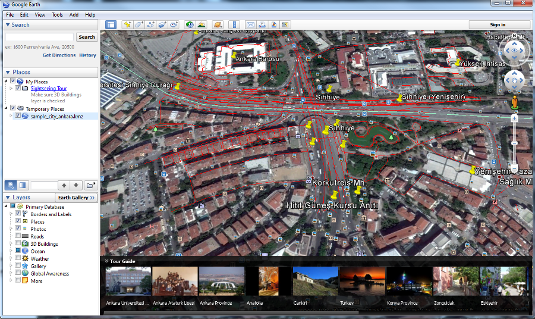

Learning Objective
- Understand what preset files are in the HOT Export Tool context
- Existing preset files
- Exporting data with the HOT Export Tool
About
HOT Exports tool is an application that provides the user with the possibility to access up-to-date geospatial
information from OpenStreetMap, create customized maps with specific tags and markers that can be visualized
and used with other application programs, translate maps in different languages and export and download the
maps in different formats for later use, like OSM format, SQLite, Google Earth.
Preset Files
Preset Files (are the same as those used in JSOM) help you download a map with specific attributes and objects that you are interested in. This is useful if the data you are accessing contains non-standard objects (we are calling them tags) that are not typically included in usual maps, like hospitals, airports, waterfalls, helicopter landing, residential areas and anything of interest that might not usually be mapped.
You can create and upload a new JOSM preset file, or use the one of the existing presets to enhance the content of your map with tags representing restaurants, hotels, railroads. The existing preset files can be found going to the HOT Export Tool page called Presets
Exiting preset files
View existing preset files
View existing preset filesExporting Data
HOT Exports provides a way to download a map of a specific area with specific objects (tags or data attributes) that you define.
- To use the existing preset files you have to go to HOT Export Tool page and create a new job, click on the New Job in the upper right corner. You will be asked to log in first.
-
After you logged in, you are presented with the New export job page.
Enter a name for the new job, such as the area you are going to download the map for. In this example
we are going to download a map for part of the city of Ankara, Turkey. The available data for the export
tool is limited to the area highlighted in the map presented on the New Export Job page.
New export job configuration page
-
Zoom on the map to the area you want to download. Click Select Area and draw
a box around the area you want (we call this Bounding Box).
The box can be manipulated by dragging its corners and centering the middle of it using your mouse.
When you are happy with the selected area click on Create Job.
Configuring the new export job
-
Next, you may add the objects you are interested in to your map (we call this "configuring the job"),
by selecting a presets file to include in your data extract.
- To add a preset file, click the drop-down menu next to Select Preset File, and choose one of the available options.
- If you want to include basic data on your map, then select HOT HDM from the drop down menu. This is recommended for beginner user.
- Check the box next to Add Default Tags to include the default attributes (tags) typically used in OpenStreetMap. This includes basic infrastructure like roads, hospitals and commercial centers.
- You can also choose to translate the map into a different language to convert the OpenStreetMap file in a different mapping schema (using Tag Transform SQL file).
Selecting the desired preset file for the new job
-
Click Save and the server will start processing your job.
The duration of the job depends on the capacity of the server and on the dimension of the area selected for the job.
The job has been started for the desired region and configuration
-
When the process is completed the data can be downloaded in a variety of formats, including OSM format, shapefiles, KMZ (Google Earth) and database format.
Job completed and the data formats available for download
- Download the Google Earth format and open the file in the Google Earth application. To see the exported data in Google Earth, open the Google Earth application then from the File menu select Open then select the downloaded kmz file. 
- You may choose to run this job again, by clicking Start new run. Running this job again will update your map with any new data that has been included in the area selected between the two runs. If you wish to select another area but use the same configuration as for this job you may click on New Job with Similar Configuration.
- All the jobs you have created appear in the list on the Jobs page (click on the button named Jobs in the right upper corner of the page). If you want to download the same area with up to date data, find the job on the Jobs page and click Start new run to process the same extract but with the most recent OSM data.